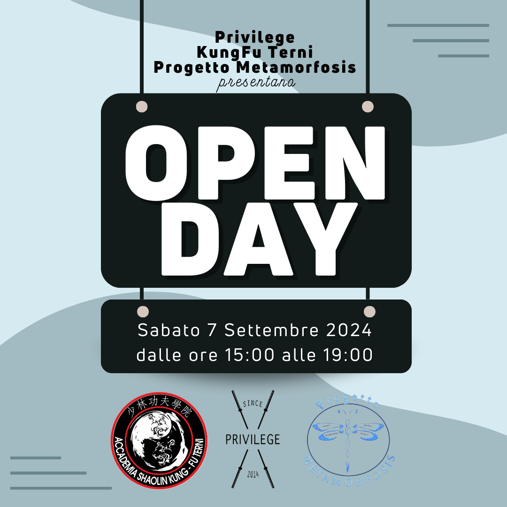
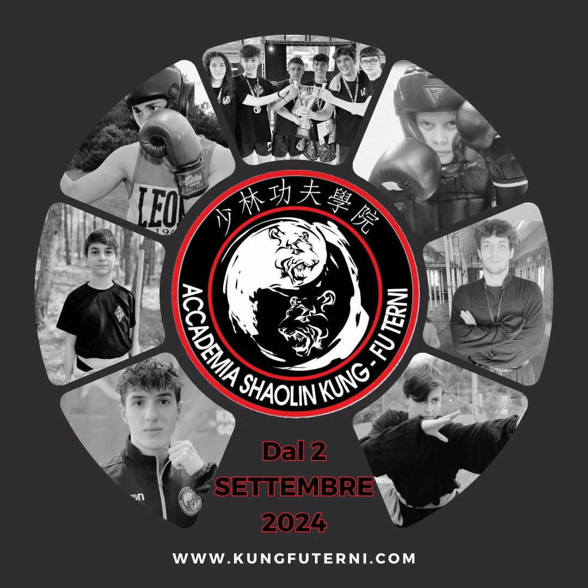

14 SETTEMBRE 2026
Inizia la stagione 2026/2027
Dal 14 settembre 2026 al 31 maggio 2027 ci ritroviamo alla Palestra Privilege, in via Arnaldo Maria Angelini 8 a Terni.
Propedeutica marziale, Kung Fu Kids, Sanda, Kung Fu adulti e Taiji Chen, insieme agli allenamenti di agonismo e alle attività del sabato.
ANNO ACCADEMICO 2026/2027
Eventi in programma
Il planning della scuola raccoglie gare, esami di passaggio di grado, stage e appuntamenti dell’anno. Apri la locandina per consultare date, orari e sedi; contatta i maestri per partecipare.
{kind=link}
Visualizza la locandina 2026/2027
Ripresa dei corsi · settembre 2025
Il 15 settembre 2025 sono ripresi i corsi della Kung Fu Terni presso la Palestra Privilege.
Ti aspettiamo in palestra: corsi di KUNG FU KIDS, TAIJI, KUNG FU ADULTI, SANDA, DIFESA PERSONALE.
Shifu Luca Primavera · Shifu Alessandro Bufi
Sede: Palestra Privilege – Via Arnaldo Maria Angelini 8, Terni
Mail: kungfuterni@gmail.com
Tel.: 320 2455584 · 340 2571421
Brochure e rassegna stampa
Brochure AA 24/25 – Vol. 1 Brochure AA 24/25 – Vol. 2 Rassegna stampa 23-24Archivio news
Terni, 22 agosto 2024
Partecipa all'Open Day della nostra struttura. Ti aspettiamo sabato 7 settembre presso la palestra Privilege, Via Arnaldo Maria Angelini 8, Terni.

Terni, 20 agosto 2024
Nuovo anno accademico a partenza dal 2 settembre 2024. Vieni a trovarci presso la nostra palestra e unisciti ai nostri corsi. Visita la pagina Orari o contattaci per ulteriori informazioni e per partecipare alle lezioni di prova gratuite.
